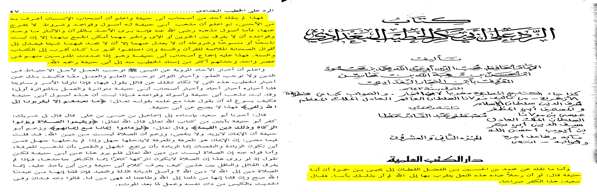

“by accusing him of bad memory. I do not know how al-Albani was tempted to assert for weakness of Imam’s memory while one who
speaks about it is the Imam of the science of al-Jarh wal Ta’dil, Yahya bin Ma’in who as stated in “al-Tahdhib” said:
“Abu Hanifa was trustworthy (thiqah) in Hadith.” And in another report he said, “Abu Hanifa is trustworthy (thiqah) and he does not
narrate a hadith except that he has memorized, and he does not narrate what he has not memorized.”And in al-Intiqa of Ibn Abd al-Barr (p.127):
It is likewise narrated from Ibn Ma’in: “(Abu Hanifa is) trustworthy (thiqah). I have not heard anyone
grade him weak. This is Shu’bah who wrote to him that he should narrate hadith and instructed him to do it. And Shu’bah is Shu’bah
(i.e. his stature in the sciences of hadith is established)”And likewise Shu’bah said: “By Allah he was good in understanding and
excellent in memory” as stated in “al-Khayrat al-Hisaan” of Ibn Hajr al-Makki p.34 And in “Jami’ Bayan al-‘Ilm 2/163 it is narrated from
Imam Abu Dawud al-Sajistani the author of as-Sunan: “May Allah have mercy on Malik, he was an Imam.
May Allah have mercy on al-Shafi’i, he was an Imam. May Allah have mercy on Abu Hanifa, he was an Imam.”And the Imams of the science of al-Jarh wal Ta’dil
from the later generations e.g. al-Mizzi, adh-Dhahabi and Ibn Hajr have compiled detailed accounts of the imam in their works and have recorded therein
of what is known of his greatness in fiqh, and his grand stature in retention, reliability and leadership (in the field of knowledge).
We have not found even a single one of them accuse him of
weakness neither on the account of reliability nor that of retention. They did not pay any attention to those heinous narrations about the imam that have
come from people with specific background because the departure of those accounts from standards of rightful criticism had become clear to them”
[Al-Arna’ut Shu’ayb at-Tahawi Sharh Mushkil al-Athar vol.6 pp.53-54]
Chapter : in using his hadith as an authority
“And they differed on using his hadith on 2 positions the first position is that he is trustworthy and
his hadith is an authority [2] …
[2] and on it is the jumhoor (majority) of scholars and ahlul hadith …”
[Manakib al-Imam Abū Hanifā pp.44 chapter on using his hadith as an authority]
was Abu hanifa weak in hadith
https://www.youtube.com/watch?v=NdRQCddMq_Q&t=286s
Refuting the claim that Imam Abu Hanifa had a bad memory
——
Refuting the claim that Imam Abu Hanifa said to worship Allah through sandals
Criticism on chain of narrators:
a) One of the narrator Abdullah bin Jafar is disputed over he is trustworthy according to Ibn Mandah and
Khateeb on the other hand he is weak according to Imam Lalkaai and Burqani
b) Shaykh Muhammad Harathi said Yahya bin Hamza was a famous qadhi and he is Damishqi,
He did not meet Abu Hanifa because he never came to Koofa and neither Abu Hanifa went to ash-Shaam.
c) Shaykh Muhammad Harathi mentioned another narration of this type and said:
وهاتان الروايتان المضطربتان تنطقان بالكذب الواضح والافتراء من الذي لا يخشى الله
These two narrations are Mudhtarib and clear lies and slanders by whom who does not fear Allah.
”Makanatul Imam Abi Hanifa Bayn al Muhadditheen”
Criticism on text
Following is the response by Ibn Najjar (d. 643 AH) who was one of the great Muhaddith
He writes:
“As to what is narrated from Muhammad bin al-Hussain bin al-Fadl al-Qatttan through Yahya bin Hamza that
Abu Hanifa said: ‘If a man were to worship this shoe to get closer to Allah I do not find anything objectionable
with this.’ Sa’id said: This is clear disbelief.
This is not narrated by any of the companions of Abu Hanifa and know that a person’s companions know him
better than the strangers. Further, remember that the madhhab of Abu Hanifa has its rules and principles that
it does not divorce with. And the principles of his madhhab is to first seek evidence with whatever one finds
in Qur’an and Sunnah. And [his] madhhab‘s principle is not to see variance between two reports or an ayah or a
report when reconciliation between the two is possible except when proof of one being abrogated and other the
abrogator is established . Their principle in
(science of seeking evidence) is not to turn away from Qur’an and Sunnah except when nothing is found in these
two sources in which case the sayings of the Companions that are closest to Qur’an and Sunnah are to be referred
to and if they differ then the one closest to Qur’an and Sunnah is to be adopted. This is something on which the
companions of Abu Hanifa have agreed and when I counted the teachers among them at a given time I found them to
be more than the links of al-Khatib back to
Abu Hanifa, may Allah have mercy on him.And know that the isolated reports (akhbar al-ahaad) narrated from the
Prophet, peace and blessings of Allah be upon him, necessitate practice by the way of cautiousness in religion
but they do not give certain knowledge whereas continuously reported narrations (akhbaar al-tawatur) lead to
certain knowledge and mandate practice as well. Then how can you refer to the narrations of al-Khatib (al-Baghdadi)
that you will hardly ever find someone saying.
Therefore, when it comes to it we say his narrations are isolated and the reports of the companions of
Abu Hanifa are continuously reported (mutawatir) and going by what is continuous is the best, and the principles,
rules and essentials of the madhhab of Abu Hanifa are established and when these principles of Abu Hanifa are proven
how is it possible for him to say so with his knowledge of the word of Allah, “(the mushrikin say) We worship
them for no other reason but because they would bring us near to Allah closely”? The report, therefore [we say], is not proven from Abu Hanifa.”
[Ibn an-Najjar al-Baghdadi, Kitab ar-Radd ‘alaa Khatib al-Baghdadi, (included in) Tarikh al-Baghdad wa Zuyulihi,
(Beirut: Dar al-Kotob al-Ilmiyah, 1417 AH), vol.22 pp.46-47, The response by Ibn Najjar ra is translated by Brother
Waqar Akbar Cheema.]

In fact Dr Bashar Awad said
“The chain is authentic But It is not possible that even a lay person say this thing, (how can a) virtuous Imam like
Abu Hanifa say this. [Tareekh Madeenatul Islam vol 15 page 509]
Note that when the chain is authentic that does not mean hadith or saying is also authentic as I have mentioned in many
of the articles. Secondly according to Shaykh Muhammad Harathi even chain is weak.
Imam Abu Hanifa was against asking help from dead, how can he say things like worshiping the shoe?
ﺫﻜﺭ ﺍﻟﺤﻨﻔﻴﺔ ﺘﺼﺭﻴﺤﺎ ﺒﺎﻟﺘﻜﻔﻴﺭ ﺒﺎﻋﺘﻘﺎﺩ ﺃﻥ ﺍﻟﻨﺒﻲ ﻴﻌﻠﻡ ﺍﻟﻐﻴﺏ ﻟﻤﻌﺎﺭﻀﺔ ﻗﻭﻟﻪ ﺘﻌﺎﻟﻰ ﻗﻝ ﻻ ﻴﻌﻠﻡ ﻤﻥ ﻓﻲ ﺍﻟﺴﻤﺎﻭﺍﺕ ﻭﺍﻷﺭﺽ ﺍﻟﻐﻴﺏ ﺇﻻ ﺍﷲ
Ahnaaf clearly states; it is Kufr(disbelief) if someone has a creed that Prophets know knowledge of Unseen, because it
is against the verse of Quran Surat An-Naml [verse 65] – Say, “None in the heavens and earth knows the unseen except Allah” [المسايرة مع المسامرة
page 235, Mullah Ali Qari Affirmed this in Sharah fiqh al-Akbar, Azeemabadi quoted this in Awn al-Mabood under the hadeeth no: 4240]
In short, if you ask help from Prophets and Auliyah and believe they know our hearing then you have done kufr.
Ibn Humam also said
“It is disliked to sleep near the grave and relieving his needs, and all that is not justified by Sunnah, and what is
justified by the Sunnah is only to visit graves, to read invocations while standing as would the Prophet (peace be upon him)
do when he was going to Baqi and say: Peace be upon you, inhabitants of the dwellings who are of the community of the believers.
If Allah wills we shall join you. We supplicate to Allah to grant us and you well being.”[Fath Al-Qadir”, vol 2 p 102, Maktabah Rashidiyah,
Kuwait, see also, www.umm-ul-qura.org/]
Note: Ibn Humam did believe that at the grave of Prophet peace be upon him one can ask Allah for his need, using Allah’s
Prophet as his means to Allah. This is not shirk but a disputed issue among the scholars, some say it is an innovation while others recommend it,
Now let me quote from the hanafi Imam who rejected this idea from Imam Abu Haneefa
Muhiydeen Muhammad ibn Ali al-Birqivial-Hanafi (b 929 h) said in “Ziyaratul quboor page 58′, explaining how muslem should
visitgrave of prophet (sallalahu alayhi wa salam):
“Salamah ibn Waradan said : I saw Anas ibn Malik doing salam on the Prophet saw then he put his back towards wall of grave
and did du’a, and this is from which there is no dispute between scholars, and the dispute is only in time of salam.
Abu Hanifah says one should also face qiblah during salam and he should not face the grave, and other than him said one
should face grave during salam only, and none of the 4 Imams said to face the grave during du’a, except a lied story from Malik,
and his madhab is opposed to that, and the same for the story reported from Shafi’I that he made purpose of du’a at Abu Hanifa’s
grave, this is from clear (blatant,Obvious) Lie.rather they said to face Qiblah during du’a and not to face grave so
that du’a is done on graves, because du’a is worship as it is established from Tirmidhi in marfu’ form ( words of Prophets) :
” Du’a is worship” and salaf from Sahabah and Tabi’I made singled ibadah for Allah, and they did not do anything on the
grave except what the Prophet peace be upon him permitted from salam to his companions and istighfar for them and mercy for them.(end)
——
Refuting the claim that Imam Abu Hanifa believed the Quran was created
Was Abu hanifa a mu’tazili who believed that the Qur’ān is created ?
Well concerning the reports they are all weak that prove he believed in one, however I am not gonna quote it because
I will waist my time I would on the other hand quote counter evidence
Al-Khāttib al-Baghdadī writes
“Al-Nikha’e said that najih bin ibrahim told him that ibn abi karama told him that ibn al-mubarak went to Abu hanifa
and he told him what has brought you here? Ibn al-mubarak said A man named jahm (I.e jahm bin safwan) Abu hanifa asked
what does he (jahm) say ibn al-mubarak said he says the Qur’ān is created Abu hanifa then recited “What a terrible claim
that comes out of their mouths! They say nothing but lies.” (Qur’ān 18:5)
And An-nikha’i said that Abu bakr al-marwazi told him that he heard Abu Abdallah Ahmed Bin Hanbal as saying: the claim
that Abu hanifā believed in creation of Qur’ān isn’t correct. [7]
And An-Nikha’e said that muhammed bin shazan told him that he heard Abu Sulayman Al-Jawzjany and mu’ala bin Mansur as
saying: neir did Abu hanifa or Abu yusuf or zuqr or muhammed ash-shaybani or any of there companions believe in creation
of Qur’ān [1]”
[7]: Classed as Sāhīh isnād
[1]: Classed as Sāhīh isnād
Tarikh Madinat al-Islam volume 15, pages 517&518
All other reports or 99% are found in tarikh madinat al-Islam you will either see
them classed da’if (weak) by the muhaquiq or it is a mursal report
That is why I am not waisting my time debunking every single isnad
Shams ad-din adh-dhahabi reports:
“Ali bin Husain said that Abu yusuf said I debated Abu hanifa for 6 month so we agreed that
whoever said the Qur’ān is created then he is a kaffir [140]”
[140]: Classed as Jāÿid (good) isnād by Al-Albani in his tahquiq
[Mukhtasar al-‘Uluw by Adh-Dhahabi pp.155]
Al-Albani then goes on to refute and weaken the reports that say he believed in the creation of the Qur’ān
Ibn taymiyah writes:
“All the famous scholars prove the attributes of Allāh and they say the Qur’ān is the word of Allah and
isn’t created and they say you can see Allah in the hereafter
And that is the madhab of the Sahaba (companions of the prophet PBUH) and the tabi’ien
(companions of the companions) from Ahlul bayt and others and that is the madhab of the followed scholars such
as Malik bin Anas At-Thawri Al-Layth bin sa’d Al-Awza’i and Abu Hanifa”
[Minhaj-us-sunnah al-nabawiyah By Ibn taymiyah volume 2, pp. 106]
Refuting the claim that Imam Abu Hanifa contradicted sahih hadith
Accusation that Imam Abu Hanifa rejected the hadith
Some people quotes the following
Sufiyan bin Uyanah said I narrated a hadith in front of Abu Hanifa he said بَلْ عَلَى هَذَا.[Kitab Al Majroheen Ibn e Hibban]
Response
1) Yahya bin Abdullah bin Mahan is disputed over, Ibne Hajar said
Abul Fath Azdi said he is not evidence [Lisan Al-Mizan] plus Yahya is not in the students of Sufiyan, he is narrating from (an) so
it is munqata i.e. It is not proven that Yahya lived at the time of Sufiyan and it is not proven that he met him.
Same is said by Shaykh Zubair Ali Zai in Anwar Okarwi k jaizay ka jaiza page no: 11. He said this is Munqata and mentioned same reason Alhumdulillah.
Note: Even Shaykh Muqbil never authenticated this athar by saying it is authentic rather he just quoted that Fadal bin alHusayn was
trustworthy [Nashr alSaheefa page 346 dar alHaramayn bil Qahirah] even though he said in the Muqaddima he will only mention authentic chains.
And we know that if narrators are trustworthy that does not mean the athar is also saheeh because there can be some Inqita or it can be odd etc.
2) The text is very Odd because not even a child would say things like this,
3) No where it says it was an authentic hadeeth, it was surely a fabricated hadith,
a) Imam at-Tawahi in support of above claim
He said:
وكان من الحجة لهم في ذلك أن هذا الحديث الذي يحتج به عليهم مخالفهم ، حديث منقطع
His (Abu Hanifas) evidence in going against this hadeeth is that this hadith is Munqata. [Sharah Maani al athaar 6/112]
b) Dr Qahtani said
He mentioned same thing under the narration like this in his tehqeeq of Kitab al-Sunnah pp.217-218 Narration 369. He says
“had the hadith been proven to him he would have followed it. In fact he finds evidence for such logical and expected attitude of the
Imam towards hadith in the very same book and refers the reader to Narration 380.”
That’s why abu Hanifa rejected that because in his authentic narrations Abu Hanifa accepted the hadith and left his fatwa, proof for that is
It is Narrated by Imam Abu Awana Wazah bin Abdullah that he was in the company of (Imam) Abu Hanifa, A letter came from a Qadhi To him
(Abu Hanifa) in which there were some Questions (regarding when the hands of theif should be cut off)
Abu Hanifa said Write, cut off, Cut off (the hand). He(Abu hanifa) even said Regarding(theif of) Palm Tree and dates, Write Cut off
(the Hands). I (Abu Awanah) Said wait, Prophet Peace be upon him said: لا قطع في ثمر ولا كثر Hands should not be Cut in the Theft of
Fruit… He (Abu Hanifa) said: Cut this (my Fatwa) and Write (Hand) Should not be cut off.
[الطيوريات vol 3 page 971 hadeeth 903 The Muhaqqiqeen of the Book الطيوريات says: In This Chain Abu Al Hasan Deebaji, Darqutni said
He is Shaykh Saleh, And other Narrators are Trustworthy and then Muhaqiqeen went on and said This narration is evidence that Hadeeth
has priority over Fatwa (taken from Al Hadeeth by Shaykh Zubair Ali Zai no:52 page 50 under the Topic True Stories (Sachay Qissay))] Scan of الطيوريات
Another true story of Imam Abu Hanifa and his love for authentic ahadith.
Ibrahim bin Tahmaan rah said, I went to Madeenah and wrote their ahadeeth and after that i went to Kufa in the house of Abu Hanifa and
said Salaam to him. He (Abu Hanifa) asked me (in Madeenah) from whom you have written ahadeeth? then I told him the name. He asked:
did you write anything from Malik bin Anas? I said Yes, then he said, bring to me what you have written and i brought. He then asked
for paper and ink and i kept on dictating and he kept on writing ahadith.[Al Jarh wa Tad’eel 1/3 authenticated by Shaykh Zubair Ali Zai]
Shaik Zubair(May Allah preserve him) says :
Three things are proven from this true story
1) Imam Abu Hanaifa considered Imam Mailk trustworthy and favourite
2) Imam Abu Hanifa used to love ahadeeth
3) Imam Abu Hanifa was student of students of Imam Malik. May Allah have mercy on him. [Majallah no.96 page no 10]
Shaykh Nasir ad din al-AlBani Rahimaullah said
The first of them is Abu Hanifa Nu’maan ibn Thaabit, whose companions have narrated from him various sayings and diverse warnings,
all of them leading to one thing: the obligation to accept the Hadeeth, and to give up following the opinions of the imaams which contradict it:
“When a hadeeth is found to be saheeh, then that is my madhhab.”
“It is not permitted for anyone to accept our views if they do not know from where we got them.”
In one narration, “It is prohibited for someone who does not know my evidence to give verdicts on the basis of my words.”
Another narration adds, “… for we are mortals: we say one thing one day, and take it back the next day.”
In another narration, “Woe to you, O Ya’qub! Do not write down everything you hear from me, for it happens that I hold one opinion today and reject it tomorrow,
or hold one opinion tomorrow and reject it the day after tomorrow.”
“When I say something contradicting the Book of Allaah the Exalted or what is narrated from the Messenger (sallallaahu ‘alaihi wa sallam),
then ignore my saying.”[Siffat as-Salaat an-Nabi]
Shaykh Zubair Ali Zai said
This is reality and proven from Imam Abu Hanifa that he went with ahadith.[Deen me Taqlid ka Masla page 21]
The point above is proven by the following story of Imam Ahmad where he rejected the hadith as mentioned by Imam at-Tirmidhee
I heard Ahmad bin Hasan saying: “We were with Ahmad bin Hanbal, so they mentioned the one upon whom the Friday prayer is obligatory.
Ahmad did not mention anything about it from the Prophet.” Ahmad bin Al-Hasan said: “I said to Ahmad bin Hanbal: ‘There is something about it from Abu Hurairah,
from the Prophet.’ So Ahmad bin Hanbal said: ‘From the Prophet?’ I said: ‘Yes.'” Ahmed bin Hasan (narrated a hadith with his chain saying): “Hajjaj bin Nusair narrated to us;
Mubarik bin Abbad narrated to us from Abdullah bin Sa’eed Al-Maqburi, from his father, from Abu Hurairah that the Prophet said: “The Friday prayer is required from
whomever can return to his family by the night.” He said: “So Ahmad [bin Hanbal] became angry with me, and he said to me: ‘Seek forgiveness from your Lord, seek forgiveness from your Lord.'”
Imam Tirmidhi explains why he got angry :
قال أبو عيسى إنما فعل أحمد بن حنبل هذا لأنه لم يعد هذا الحديث شيئا وضعفه لحال إسناده .
I.e the hadeeth presented (and acted upon) was dhaeef [Jami` at-Tirmidhi 502] Comment: This is a proof that whenever any Imam Rejects the hadith that means the hadith is
dhaeef or abrogated according to him.
Imaam Ibn Khuzaimah said,
“Imaam Ahmad bin Nasr narrated a hadeeth of the Messenger of Allaah (Sallalahu Alayhee Wasallam). So I asked him, “Do you deduce evidence from this hadeeth (ie do you take it.)
Imaam Ahmad bin Nasr said, “Do you see me wearing a waistband/girdl? So do not say to me if I take the hadeeth of the Messenger of Allaah (Sallalahu Alayhee Wasalam) or not!
Rather say is this hadeeth authentic because when a hadeeth is established from the Messenger (Sallalahu Alayhee Wasalam) with an authentic chain then
I accept it whether you wish to accept it or not.” (Dhamm Kalaam Waa Ahluh (2/178).
and ash-Shoabi said:
ما حدثوك عن أصحاب محمد صلى الله عليه وسلم رضي الله عنهم فخذه، وما قالوا برأيهم فبل عليه.
Take whatever they tell you from the Companions of Prophet peace be upon him, and whatever they say according to their opinions than فبل عليه.[Jame Byan al Ilm 2/22,
quoted by Shaykh Badi al-Din Shah ar-Rashidi in his book Tanqeed e Sadeed page 100]
Comment: so for Imam Abu Hanifa that was not a hadeeth rather a fabrication that is why he used those words. Abu Hanifa was not biased in his opinion, when ever he found
authentic hadeeth he immediately left his Fatwa as proven above and he used same words like ash-Shoabi on fabricated opinions and ahadeeth.
Ibn Taymiyah notes:
"Whoever thinks that Abu Hanifah or others from the Imams of the Muslims oppose a sahih hadith because of qiyas or another [principle] then he is mistaken regarding
them and has either spoken based on conjecture or his whims and desires. Abu Hanifah would act on the hadith of performing wudu’ with nabidh [s: a drink made from certain fruits]
while on a journey in opposition to qiyas and would act on the hadith of laughing out loud in salah in opposition to qiyas because he believed both narrations to be authentic
even though the scholars of hadith did not consider them to be authentic. We have explained this in more detail in
our treatise Raf al-Malam an al-A’immat al-A`lam and we have also explained how none of the Imams opposed an authentic hadith without a valid reason; in fact they had many reason to oppose it…”
[Majmu' Al-Fatawah By Ibn Taymiyah, vol.20 pp.304-305]
Refuting the claim that Imam Abu Hanifa said that the imaan of Iblis, Adam peace be upon him and Abu Bakr RA is one
Fazari said Abu Hanifa said the eeman of Adam and Iblees was one. Iblees said ( “My Lord, because You have put me in error,) and Iblees said
“My Lord, then reprieve me until the Day they are resurrected.” and Adam said “Our Lord, we have wronged ourselves”
Firstly, that there is some problem in the text of the narration.
Abu Tooba from Abu Ishaq Fazari narrated the words of Abu Bakr whereas Abu Saleh narrated from Abu Ishaq fazari the words of Adam peace be upon him.
And it is said that Abu Ishaq Fazri hated Imam Abu Hanifa ra because his brother was martyred when he went to jihad according to the fatwa of Abu Hanifa
(This story has to be checked I just read it)
Secondly, that Iblees did believe in existence of God because he asked permission by saying “MY LORD”, but he is perished because he rejected to follow Allah.
While Adam peace be upon him believed in the existence of God plus He followed Allahs orders. So as far as Eeman in existence of Allah even a child knows that even Shaitan Maloon believes that.
How can Imam Abu Hanifa ra say these things to the likes of Abu Bakr ra when Abu Hanifa r.a himself said
” What comes to us (directly)from the Allah the Almighty (i.e. in the Qur’an) is held themost supreme by us, and what reaches us from the Messenger of Allah
-peace and blessings of Allah be upon him- we (simply) listen and obey, and what reaches from the Companions -Allah be pleased with them- we chose the best from their
opinions and do not leave them all (i.e. we stick to one of their opinions) and what comes to us from the opinions of the Followers (tabi’un), so they are men like us.”
[Ibn Hazm, Al-Ahkam fi Usool al-Ahkam, Dar al-Afaq al-Jadida, Beirut n.d. vol.4 p.188]
——
Refuting the claim that Imam Abu Hanifa was a murji’i
Response:
As for Revolt against leaders then it is mentioned in Fiqh Books that revolt against leader is not allowed according to Imam Abu Hanifa
Muhammad bin Hasan ash-Shaybani said:
If the people differ in a matter, where a group says following it will doom us and the other group says it will save us, then follow the Ameer on that matter unless
the Ameer order a person for a thing which is false without a doubt of all the people, or the Ameer order him to do a sin then it is not obligation on the people to follow him.
But it is obligation on them to be patient and do not revolt against the Ameer. [Sharah Seyar al Kabeer 117-118]
Sarkhasi al Hanafi commented
لحديث ابن عباس رضي الله عنهما أن النبي صلى الله عليه وسلم قال: ” من أتاه من أميره ما يكرهه فليصبر فإن من خالف المسلمين قيد شبر ثم مات ما ت ميتة الجاهلية.
Due to the hadith narrated by Ibn Abbas Radhi Allah anho that the Prophet peace be upon him said:
One who found in his Amir something which he disliked should hold his patience, for one who separated from the main body of the Muslims even to the extent of a
handspan and then he died would die the death of one belonging to the days of Jahiliyya. [Ibid]
It is mentioned in the Hanafi fiqh books
وإذا قلد عدلا ثم جار وفسق لا ينعزل ; ولكن يستحب العزل إن لم يستلزم فتنة ; ويجب أن يدعى له ; ولا يجب الخروج عليه ; كذا عنأبي حنيفة ، وكلمتهم قاطبة
[المسايرة مع المسامرة, see also Radd al Mukhtar and Asool al Deen by Bazdawi page 190]
Imam at-Tahawi said regarding the stance of Imam Abu Hanifa in Aqeedah Tahawiyahregarding revolt
81: We do not believe in revolt against our leaders and rulers even if they commit injustice, nor do we pray against them, or defy their orders.
On the contrary we believe that obedience is a duty and part of our obedience to Allah, so long as they do not order something sinful.
We pray for their saftey and piety.[Aqeedah at-Tahawiyah]
Ali Ibn Abi al ‘Izz al-Hanafi (731 h-792 h) Rahimaullah said
“It is much better to stick to obeying the rulers even if they are oppressors, because rebellion against them will cause even greater strife.
Being patient with them will be an expiation for misdeeds and increase rewards.”[Commentary of Aqeedah Tahawiyah page339]
Shaykh Muhammad Ibn ‘Abdur-Rahmaan al-Khumayyis and other scholars said he changed his opinion and this is accepted by Tahawi Hanafi and he
quotes statements attributed to Imam Abu Hanifa on this issue see Asool al-Din According to Imam Abu Hanifa page 564 to 569
This is also accepted by Allamah Aini Hanafi and he said
“This indicates that the ruler is not to be removed due to impiety or wrongdoing. It is not allowed to remove him from his rule for that.”
[Umdah al-Qaari, vol. 24, p. 178, taken from the article Criteria for revolt against a Muslim Ruler ]
As for Actions are included in Iman or not than Shaykh Muhammad Ibn ‘Abdur-Rahmaan al-Khumayyis said
Indeed it has been mentioned by Ibn ‘Abdul-Barr and Ibn Abil-‘Izz that Imaam Aboo Hanifa retracted this statement, and Allaah knows best (Refer to at-Tamheed (9/247)
of Ibn ‘Abdul-Barr, and Sharhul-‘Aqeedatit-Tahaawiyyah (p. 359) of Ibn Abil-‘Izz al-Hanafee)[Taken from The Creed of the Four Imams THE
STATEMENTS OF IMAAM ABU HANIFA CONCERNING AL-EEMAAN]
In act The Imam of Ahnaf Anwar Shah Kashmiri denied that It is not proven with authentic chain from Abu Hanifa that he said Eeman can not increase or decrease.
Even if someone do not want to believe than it is called murji’at ul fuqahaa’ and ‘the murjiah of ahl us sunnah’. They are from ahl us Sunnah but this slight mistake
occurred from them;And this does not decrease Imaam Abu Hanifa’s status as said by Shaykh Salih al-Fawzan[Explanation of Lu’mat ul I’tiqaad p 312]
Shaykh ul Islam Ibn Tamiyah said
The opinion of Irja came into a group of fuqaha, These fuqaha are also people of Deen and knowledge according to the scholars. The righteous predecessors did not do
takfir on this, rather it is an innovation of aqwaal and Afaal, not the innovation of aqaaid, and most of it has the difference of the words only,
And all of it is in accordance of Quran and Sunnah, and none of it is against the sayings of Quran and Sunnah [Majmoo Fatawa 7/297, Kitab al Iman by Shaykh ul Islam Ibne Tamiyah page 337]
He also said:
When this saying (Murjiya) is attributed to the fuqaha like Hammas bin abi Sulayman and Abu Hanifa and others, All of them are in agreement of Ahlus sunnah that
Allah will punish the sinners and will take them out from fire due to the shafaah as it is mentioned in authentic ahadith.
[Majmu Fatawa 13/38]
Ali Ibn Abi al ‘Izz al-Hanafi (731 h-792 h) Rahimaullah said
The difference between Imam Abu Hnaifa and others imams of Ahlus sunnah is not substantial. For Abu Hanifa the action of the body are necessary consequences of
faith in the heart; for others they are part of faith; but all of them believe that one who commits a major sin does not thereby cease to be a Muslim; he is at
the mercy of Allah, who may forgive him or punish him, as He wills. Their difference is merely a matter of semantics, which does not materially affect Iman. Those who
judge that one who does not offer prayer is an infidel cite other reasons besides reiterating this principle, for the Prophet peace be upon him denied Iman for the
fornicator, the adulterer, the thief, the drinker and the fornicator they were not dubbed non believers. This is point on which all are agreed.[Commentary of Aqeedah Tahawiyah page 283-284]
He also said :
فالإمام أبو حنيفة رضي الله عنه نظر إلى حقيقة الإيمان لغة مع أدلة من كلام الشارع . وبقية الأئمة رحمهم الله نظروا إلى حقيقته في عرف الشارع ، فإن الشارع ضم إلى التصديق أوصافا وشرائط ، كما في الصلاة والصوم والحج ونحو ذلك .
Comment: So we have
Those scholars who say that It is not authentically proven DIRECTLY from Abu Hanifa that Eeman can not increase or decrease so this accusation is false.
Those Scholars who say that even if it is proven than this is Murjiyah tu Fuqaha or Murjiya Ahlus sunnah,
no one ever did takfeer on these people rather they just did slight mistake.
Those Scholars who say that Abu Hanifa ra did ruju from his statements regarding Eeman.
As for the report mentioned in tarikh baghdad it was weakned by the muhaquiq